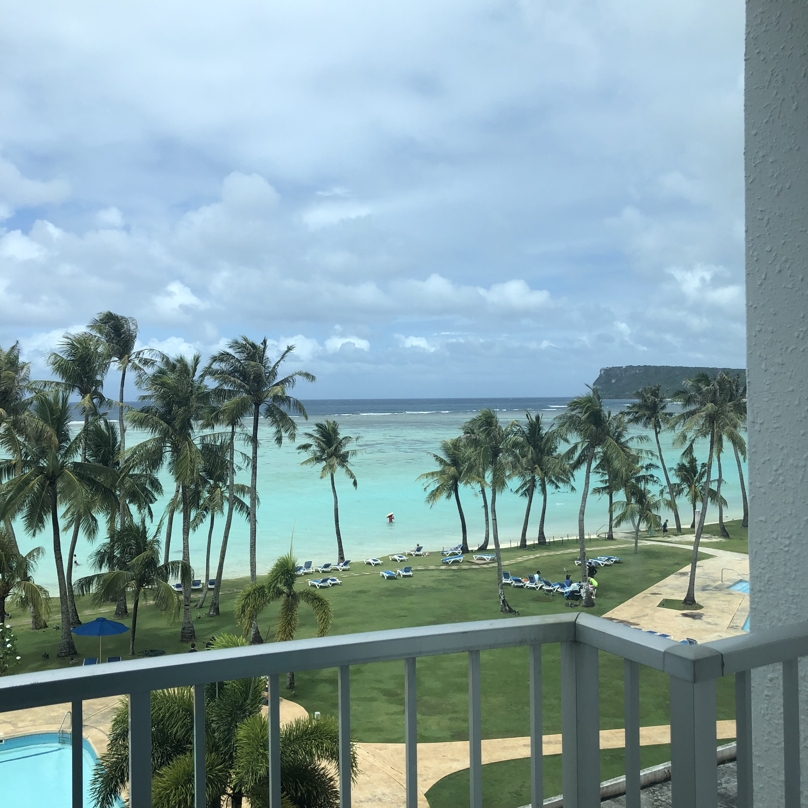
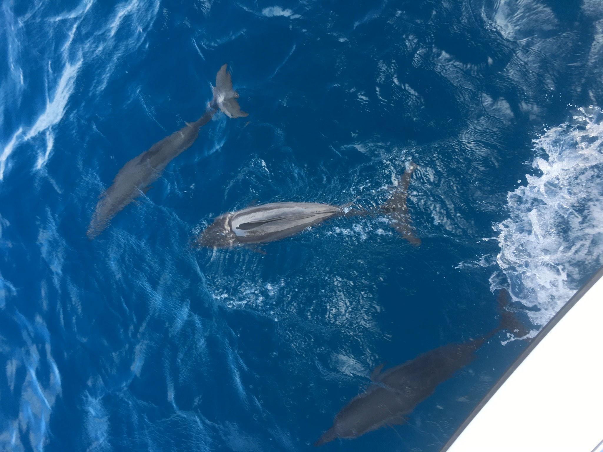
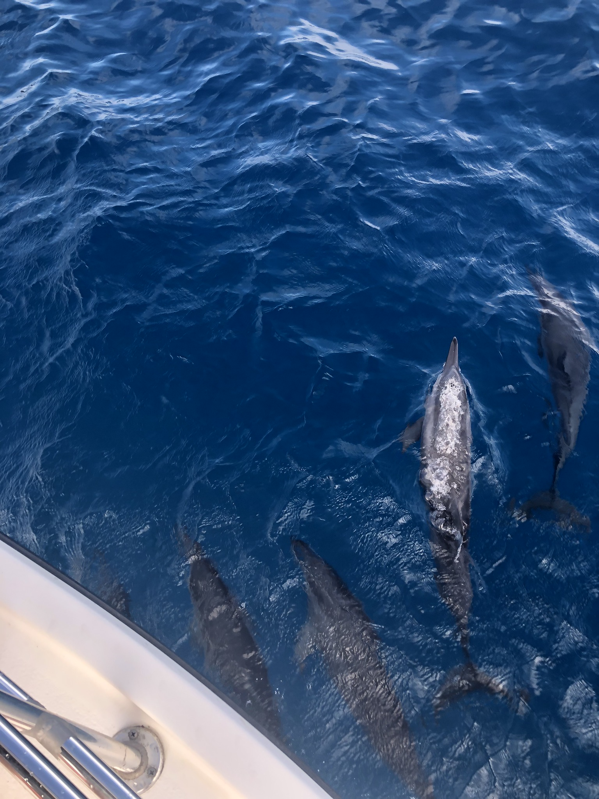
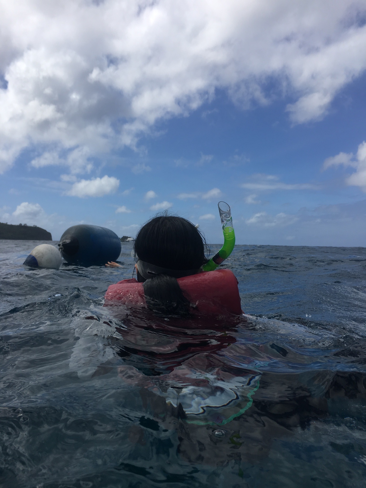
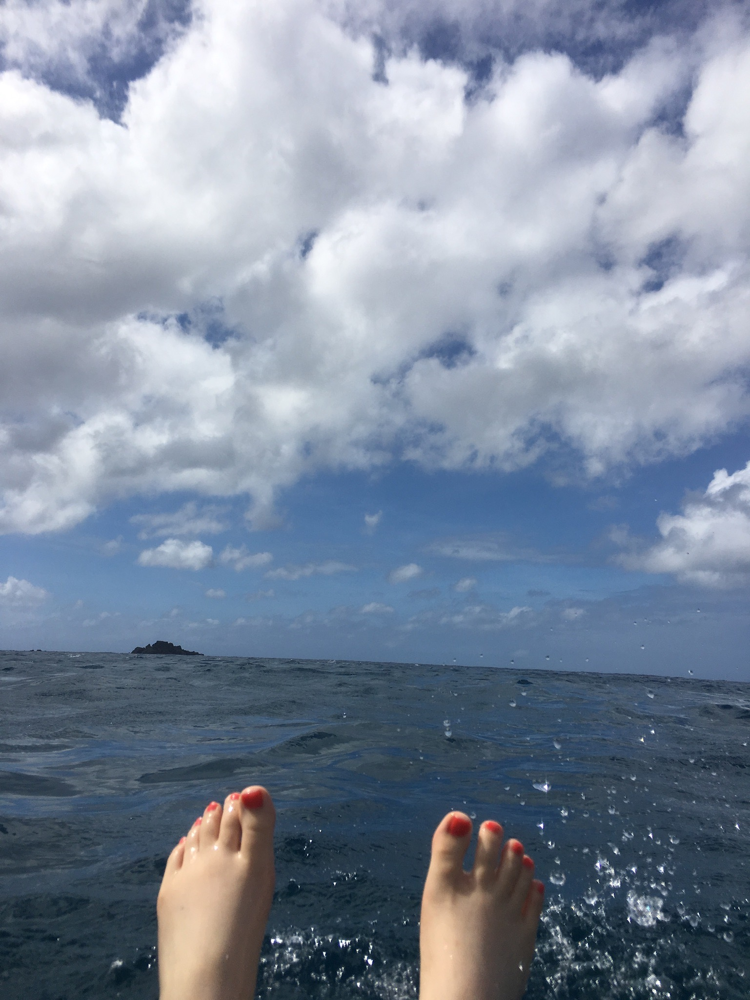

여행 로그
돌핀 크루즈
2022.12.15
괌의 대표적인 액티비티
괌은 휴양지로 유명하며, 소위 말하는 에메랄드 빛의 바다를 가지고 있다.  따라서 바다에서 즐길 수 있는 여러가지 액티비티들이 있는데, 그 중에서 배를 타고 돌고래를 구경할 수 있는 돌핀 크루즈와 바다 스노클링을 예약했다.
돌핀 크루즈
배를 타고 빠르게 달리면, 배의 곁으로 점프하며 달려오는 돌고래를 볼 수 있다.   수족관에 가둬 놓은 돌고래가 아니라 자유롭게 헤엄치는 돌고래를 구경할 수 있어서 눈도 마음도 즐거운 액티비티였다.
바다 스노클링
배에서 돌고래를 구경하고 나면 바다 한 가운데에 배를 세워놓고 그 근처에서 스노클링을 할 수 있다. 바다 깊숙이까지는 들어가지 못하지만, 바닷 속이 어떻게 생겼는지 보면서 헤엄칠 수 있다.  